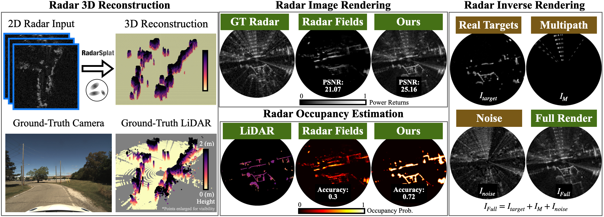

RadarSplat enables radar 2D-to-3D scene reconstruction, image synthesis, and occupancy estimation. RadarSplat outperforms the state-of-the-art neural rendering method both qualitatively and quantitatively while also enabling additional radar inverse rendering.
Abstract
TL;DR: We introduce RadarSplat, a novel Radar Gaussian Splatting method for scene reconstruction, novel view synthesis, and inverse rendering.
High-Fidelity 3D scene reconstruction plays a crucial role in autonomous driving by enabling novel data generation from existing datasets.
This allows simulating safety-critical scenarios and augmenting training datasets without incurring further data collection costs.
While recent advances in radiance fields have demonstrated promising results in 3D reconstruction and sensor data synthesis using cameras and LiDAR, their potential for radar remains largely unexplored.
Radar is crucial for autonomous driving due to its robustness in adverse weather conditions like rain, fog, and snow, where optical sensors often struggle.
Although the state-of-the-art radar-based neural representation shows promise for 3D driving scene reconstruction, it performs poorly in scenarios with significant radar noise, including receiver saturation and multipath reflection.
Moreover, it is limited to synthesizing preprocessed, noise-excluded radar images, failing to address realistic radar data synthesis.
To address these limitations, this paper proposes RadarSplat, which integrates Gaussian Splatting with novel radar noise modeling to enable realistic radar data synthesis and enhanced 3D reconstruction.
Compared to the state-of-the-art, RadarSplat achieves superior radar image synthesis (+3.4 PSNR / 2.6x SSIM) and improved geometric reconstruction (-40% RMSE / 1.5x Accuracy), demonstrating its effectiveness in generating high-fidelity radar data and scene reconstruction.